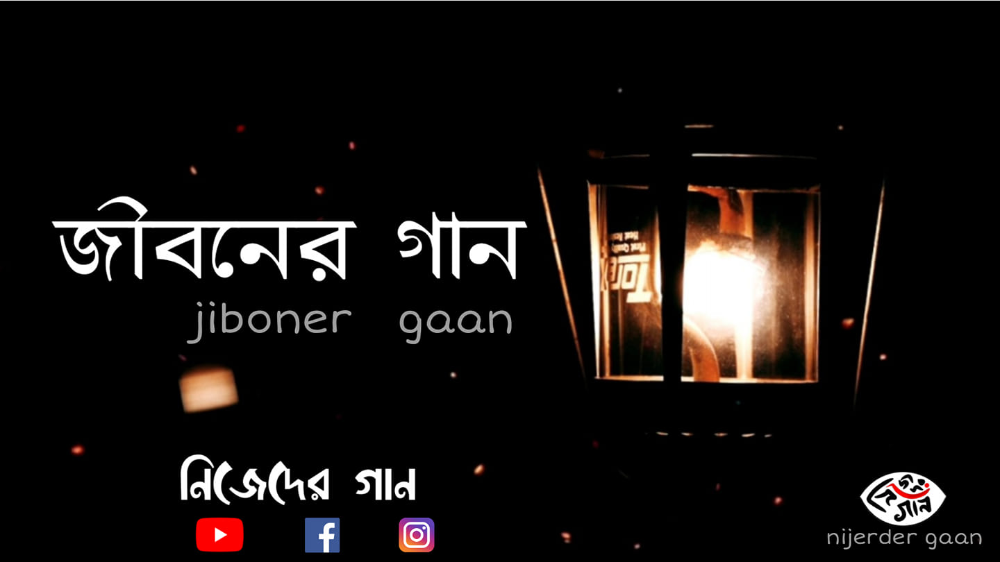

Song credits :
Lyrics,Tune & Vocal - Indrajit Bala
Guitar - Indrajit Bala
Animation - Rajib Dutta
Edited by - Arghyadeep Chowdhury & Trisha Debnath
Special Thanks - Debdeep Banik & Team Nijeder Gaan
Check it out Our Facebook Page 👇

Lyrics :
চল,আজকের দিনটায় নতুন কিছু করে যাই
এই জীবনের খাতাটায় নতুন কথা লিখে যাই
দুঃখে ভরা খাতাটায় সুখের কথা লিখে যাই
কষ্ট গুলো সরিয়ে নতুন করে উড়ে যাই
এই জীবনের খাতাটায় নতুন কথা লিখে যাই
দূরে ওই পাহাড়ের চূড়ায় উঠি চল
আকাশের তারাদের দেশে চল
সাগরের গভীরের দেশ ঘুরতে চল
স্বপ্নেরই বাড়ি দেখতে চল
এই জীবনের খাতাটায় নতুন কথা লিখে যাই
আজকের দিনটায় নতুন কিছু করে যাই
মিথ্যে কথার শহরে ,সত্যকে আনি চল
বেসুরো জীবনের গিটারে ,নতুন সুর বাঁধি চল
বাঁধা গুলো ছুড়ে ফেলে নতুন পথে হাটি চল(×2)
নতুন সুরে বাঁধা গিটারে জীবনের গান গাই চল
নতুন ভাবে নতুন করে উঠে দাড়াই চল
বাঁধা গুলো ছুড়ে ফেলে নতুন পথে হাটি চল(×2)
এই জীবনের খাতাটায় নতুন কথা লিখে যাই
চল,আজকের দিনটায় নতুন কিছু করে যাই
এই জীবনের খাতাটায় নতুন কথা লিখে যাই
দুঃখে ভরা খাতাটায় সুখের কথা লিখে যাই
কষ্ট গুলো সরিয়ে নতুন করে উড়ে যাই
এই জীবনের খাতাটায় নতুন কথা লিখে যাই